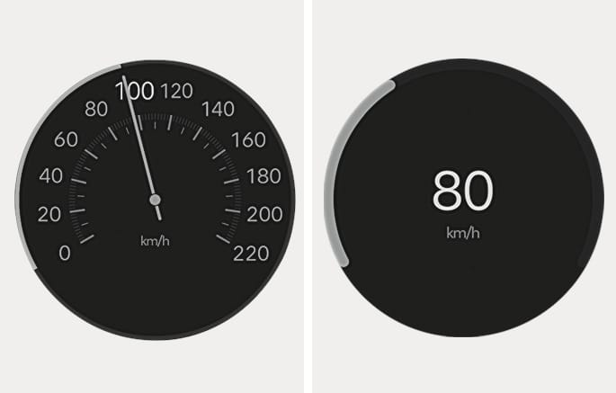

속도계
A타입/B타입

2C_Speedmeter
차량의 주행 속도를 표시합니다.
주행 중인 도로의 제한 속도 이하로 운전하십시오. 특히 어린이 보호 구역을 지날 때는 30 km/h 이하로 운전하십시오.
클러스터의 속도계에 표시된 주행 속도와 내비게이션에 표시된 주행 속도 사이에는 다소간의 차이가 있을 수 있습니다.

2C_Speedmeter
차량의 주행 속도를 표시합니다.
주행 중인 도로의 제한 속도 이하로 운전하십시오. 특히 어린이 보호 구역을 지날 때는 30 km/h 이하로 운전하십시오.
클러스터의 속도계에 표시된 주행 속도와 내비게이션에 표시된 주행 속도 사이에는 다소간의 차이가 있을 수 있습니다.